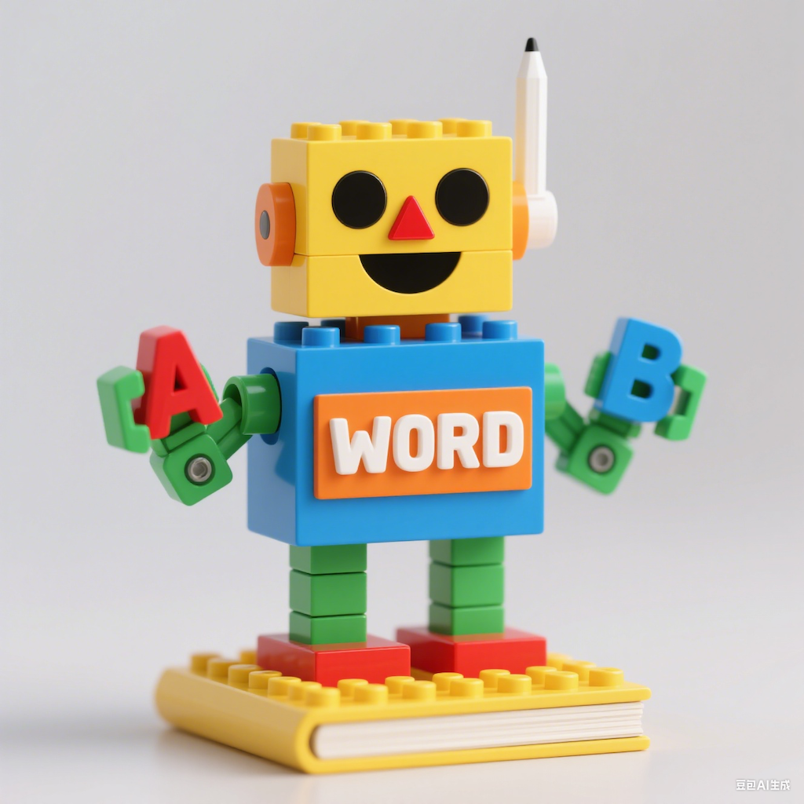

Offline vocabulary
Core primary and middle school English words are available without requiring a network connection.
WeYoung
Offline word lists, smart review planning, favorites, and progress tracking for primary and middle school English study.
面向中小学生的英语单词学习应用，支持离线词库、智能复习、生词收藏和学习进度记录。

Core primary and middle school English words are available without requiring a network connection.
Study flow combines new words, review words, favorites, and weak words to reduce manual planning.
Students can start quickly, practice repeatedly, and track progress without creating an account.
如果遇到使用问题，可以通过邮件联系开发者，并说明设备型号、iOS 版本和问题发生的页面。